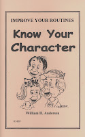

Improve your routines
7/16/2010
Know Your Character
The key to any good discussion is to know the person to whom you are talking. Without knowing the person your conversation will be reduced to things like, "How are you?" or "Nice day isn't it?" But if you know the other person the topics you can discuss are unlimited. The same is true of a ventriloquist and his partner. Knowing who your partner is, what he or she likes and does, will help you write a routine.
There are ventriloquists who purchase a figure which was advertised with some pre-given name. Thinking the doll is already named, they keep that name. They probably also think the figure has a built in personality. If he does, he is not going to tell you! Whatever his name was in the store should not be of importance to you. You have the job of naming the figure and giving him the personality you want him to have as you use him. You decide what his interests, traits, abilities, likes and dislikes are. You decide what the character of the figure will be. Choose wisely.
* * * * *
Adapted from the book Know Your Character, by William H. Andersen. The author goes on to list things you should know about the figure you use, and explains how knowing these things will help you write a routine, including illustrations on how questions can be turned into laugh lines. Some tested dialogue bits you can use are also included. $5.00 postpaid. Buy it now HERE.
Another excellent book on this subject is Creating A Character by professional ventriloquist and performance expert, Ken Groves. I do not have this book to sell, but I did find a new copy that is a duplicate in my library and I'll give it away as today's prize to Graeme Lyall.
The key to any good discussion is to know the person to whom you are talking. Without knowing the person your conversation will be reduced to things like, "How are you?" or "Nice day isn't it?" But if you know the other person the topics you can discuss are unlimited. The same is true of a ventriloquist and his partner. Knowing who your partner is, what he or she likes and does, will help you write a routine.
There are ventriloquists who purchase a figure which was advertised with some pre-given name. Thinking the doll is already named, they keep that name. They probably also think the figure has a built in personality. If he does, he is not going to tell you! Whatever his name was in the store should not be of importance to you. You have the job of naming the figure and giving him the personality you want him to have as you use him. You decide what his interests, traits, abilities, likes and dislikes are. You decide what the character of the figure will be. Choose wisely.
{kind=link}

* * * * *
Adapted from the book Know Your Character, by William H. Andersen. The author goes on to list things you should know about the figure you use, and explains how knowing these things will help you write a routine, including illustrations on how questions can be turned into laugh lines. Some tested dialogue bits you can use are also included. $5.00 postpaid. Buy it now HERE.
Another excellent book on this subject is Creating A Character by professional ventriloquist and performance expert, Ken Groves. I do not have this book to sell, but I did find a new copy that is a duplicate in my library and I'll give it away as today's prize to Graeme Lyall.